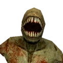
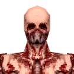
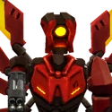

Enemies
Category page
ULTRAKILL offers a variety of enemies that differ vastly in appearance and behavior. They can be categorized into different types:
- Husks: Tortured remains of humanity in a zombie-like form. Usually fodder.
- Demons: Residents of Hell proper. Characterized by their humanoid stone exterior and fleshy interior.
- Machines: Hell's invaders seeking blood for fuel. Highly varied, attack focused enemies.
- Angels: Residents of Heaven that seek to maintain the natural order of things. They wield devastating holy power.
Enemies are able to damage each other (as well as themselves) during combat, and will actively target each other in some select cases, such as a few scripted events involving Swordsmachine in [ 0-2: THE MEATGRINDER ] or in the multiple rooms of [7-3: NO SOUND, NO MEMORY].
Enemies with an asterisk (*) next to their name indicate that they are introduced as a boss early on but appear as normal enemies later in the main story or in the Cyber Grind. Enemies exclusive as bosses are listed differently from standard enemies. Lastly, enemies that don't fall under any of the previously given categories will be given their own unique category.
NOTICE: As ULTRAKILL is still in development, this list is subject to changes and additions. Some enemies don't yet have an official icon and use the ? image instead.
MONSTERS
| Enemy |
Descprition |
Damage type and amount |
Hit Points |
Damage Modifier |
| 
Filth
|
- Introduced in the Intro.
- Common enemy found throughout the entirety of the game.
- Runs towards the player at a fast pace and lunges at them when close.
- Leaps far and high on Brutal.
- Extremely weak, the dictionary definition of "horde enemy".
- An appetizer.
- Gives supreme head despite being a lesser.
- Are definitely NOT free style points in Brutal Difficulty.
|
30 (Lunging Bite)
30 (Leaping Bite)
|
HP: 0.5
|
Silver Nails - 200%
While airborne - 150%
While on fire - 150%
(Excl. explosions and fire DoT)
|
|

Tusk
|
- Introduced in [ 0-1: INTO THE FIRE ].
- Tries to keep their distance from the player.
- Will periodically throw a hell energy projectile at the player.
- No melee attacks.
- Similar in appearance to the Zombie from Quake.
- Although it has enough willpower to create arms and eye sockets, it is still too weak to have skin.
- Can't give head (because it's uncapable of doing so).
|
25 (Projectile)
|
HP: 1.5
|
Silver Nails - 200%
While airborne - 150%
While on fire - 150% (Excl. explosions and fire DoT)
|
|

V2
|
- Introduced in [ 1-4: CLAIR DE LUNE ].
- V1's little brother and self-proclaimed successor.
- Noble and honorable enough to bow before the fight, but still fights like a weak coward.
- Uses the same default weapons and movement as the player, but has infinite wall-jumps and dashes.
- Doesn't know how to shoot quarters.
- Its Revolver has a faster primary fire rate than the player's.
- The first Supreme Machine encountered in the game.
- Will Enrage if ignored. Stupid little clout chasin' brat.
- Drops its arm after getting defeated, which it never used, not even on Brutal.
|
10 (Revolver)
30 (Charge Shot)
15 (Revolver Ricoshot, increases by 7.5~ per coin)
25 (Shotgun Pellets)
35 (Core Eject)
|
HP: 40
|
Revolver - 60%
|